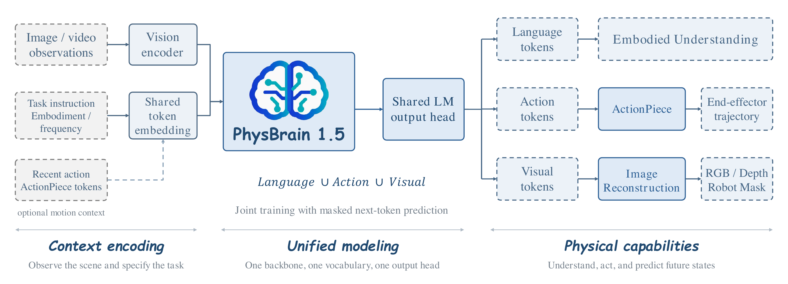
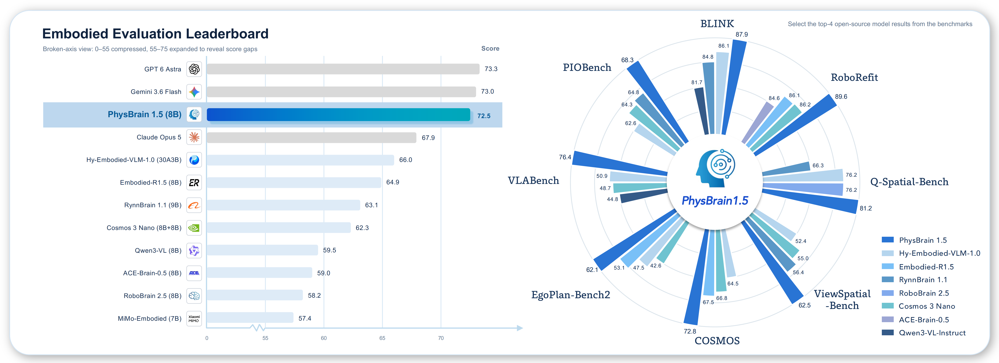
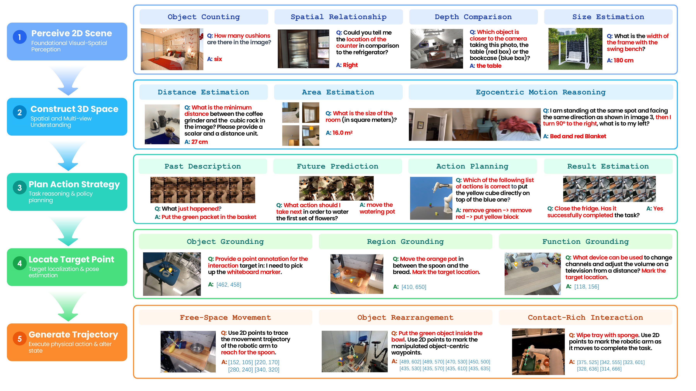
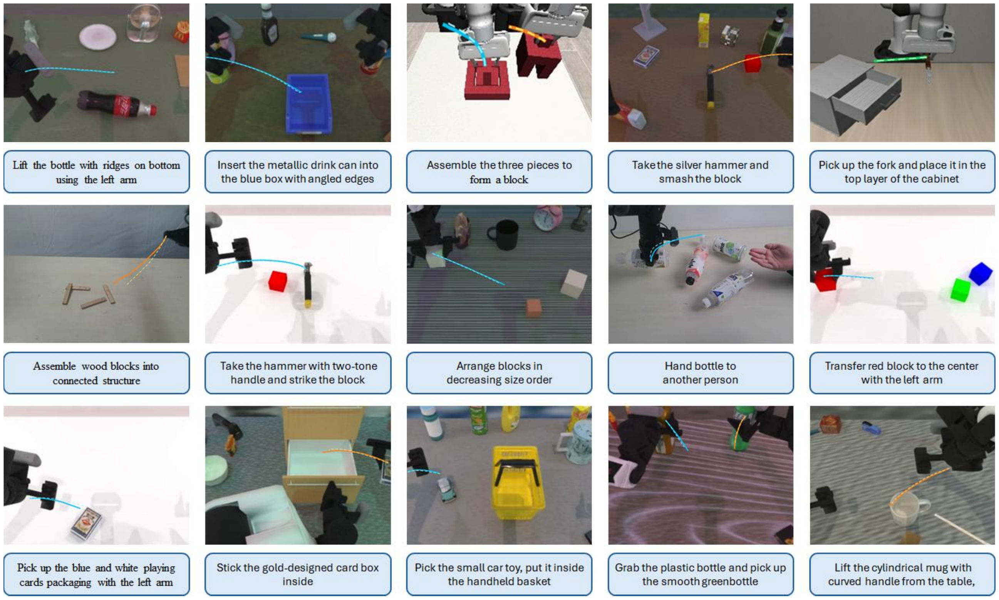
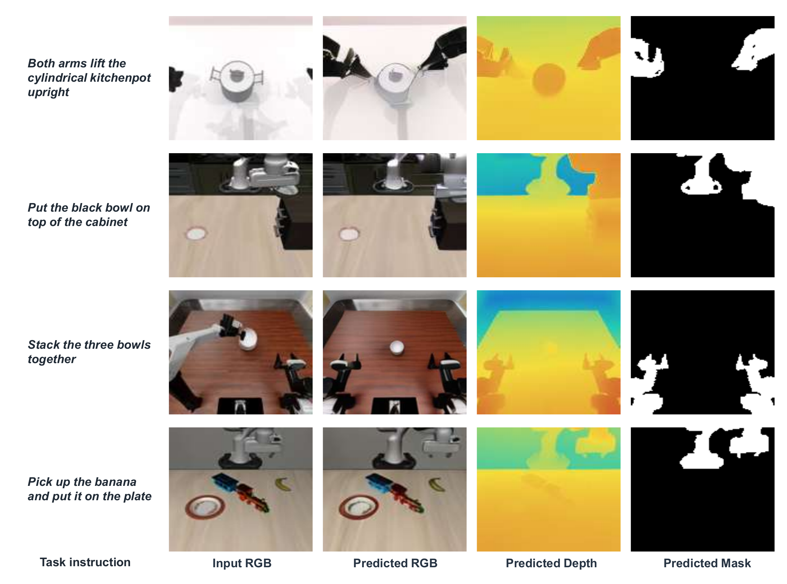

A unified embodied vision-language model that understands the observed world, generates goal-directed actions, and predicts how the environment will evolve — all as discrete tokens under a single shared autoregressive backbone.
PhysBrain 1.5 mirrors the closed physical loop of agent–environment interaction: observations guide reasoning and action, actions alter the environment, and the updated state feeds back as the next observation. Language responses, structured spatial outputs, end-effector trajectories, and future world states are all formulated as discrete tokens and jointly learned under a unified next-token prediction objective — no task-specific heads.
Visual-spatial perception, 3D & multi-view reasoning, embodied planning, pointing & affordance grounding, and visual-trace reasoning across 28 benchmarks.
ActionPiece tokens encode end-effector trajectories in a unified action codebook shared across control configurations and arm setups — one generalist checkpoint drives varied robotic platforms.
Predicts the world one step ahead as spatially aligned RGB images, depth maps, and robot masks — a multimodal world model inside the same vocabulary.
Observations guide reasoning and action; actions change the world, and updated observations feed back into the next round. PhysBrain 1.5 learns understanding, action generation, and future-state prediction within one shared autoregressive model.
Perceive 2D scenes and construct 3D spatial representations.
Plan strategies, localize targets, and ground affordances.
Generate goal-directed end-effector trajectories.
Predict state transitions; new observations close the loop.
Learning from interaction. Pre-training draws its embodied supervision entirely from human interaction videos — egocentric, synchronized ego–exocentric, and panoramic recordings structured into task-centered episodes. Supervised fine-tuning then combines human demonstrations, real-robot trajectories, and simulated experience.
Built on pretrained Qwen3-VL and extended with dedicated action and visual-state tokens. Semantic, motion, and future-state supervision all update the same parameters through one next-token prediction objective.

PhysBrain 1.5 model architecture — language, action, and visual tokens in a single autoregressive stream.
Across 28 embodied spatial-intelligence and planning benchmarks, PhysBrain 1.5-8B achieves an overall score of 72.5 — ranking first among open-source models and performing on par with leading proprietary systems such as GPT-6-Astra (73.3) and Gemini 3.6 Flash (73.0). It ranks first on 14 benchmarks and second on 10 among open-source models.

Overall embodied-benchmark scores. All models are independently re-evaluated with one canonical metric per benchmark for direct comparability.
28 benchmarks · 13 models · Scores out of 100, higher is better. Scroll to compare all models.
| Benchmark | Closed source | Open source | |||||||||||
|---|---|---|---|---|---|---|---|---|---|---|---|---|---|
| Gemini 3.6 Flash | GPT 6 Astra | Claude Opus 5 | Hy-Emb.-VLM-1.0 | Embodied-R1.5 | RynnBrain1.1 | RoboBrain2.5 | MiMo Embodied | Cosmos3 Nano | ACE-Brain-0.5 | Qwen3-VL-Inst. | PhysBrain 1.5 | PhysBrain 1.5 | |
| — | — | — | 30A3B | 8B | 9B | 8B | 7B | 8B+8B | 8B | 8B | 2B | 8B | |
| 01 · Foundational Visual-Spatial Perception | |||||||||||||
| BLINK | 89.2 | 80.6 | 85.5 | 86.1 | 78.6 | 84.8 | 80.4 | 69.5 | 80.6 | 77.8 | 81.7 | 81.9 | 87.9 |
| CV-Bench | 90.0 | 84.9 | 87.8 | 89.3 | 86.9 | 88.1 | 88.0 | 89.4 | 88.3 | 85.0 | 85.8 | 87.6 | 90.0 |
| 02 · Spatial and Multi-view Understanding | |||||||||||||
| 3DSRBench | 67.7 | 62.3 | 63.3 | 62.1 | 52.3 | 59.0 | 54.7 | 53.2 | 53.5 | 51.8 | 53.6 | 59.3 | 63.0 |
| EmbSpatial-Bench | 84.7 | 79.8 | 81.1 | 80.5 | 75.2 | 81.9 | 77.9 | 77.0 | 82.1 | 77.9 | 79.9 | 78.9 | 81.8 |
| MindCube | 77.1 | 78.8 | 66.7 | 65.4 | 30.9 | 82.1 | 30.4 | 31.3 | 39.2 | 94.2 | 33.9 | 60.9 | 86.2 |
| MMSI-Bench | 52.8 | 57.9 | 44.1 | 39.0 | 30.1 | 46.0 | 29.4 | 31.8 | 35.7 | 35.8 | 30.8 | 30.7 | 41.0 |
| Q-Spatial-Bench | 87.1 | 68.3 | 74.3 | 76.2 | 51.5 | 66.3 | 76.2 | 47.5 | 46.5 | 35.6 | 54.5 | 69.3 | 81.2 |
| RoboSpatial-Home | 71.0 | 73.7 | 72.0 | 71.2 | 72.0 | 70.4 | 67.3 | 60.1 | 66.4 | 65.9 | 67.7 | 65.0 | 73.9 |
| SAT | 88.7 | 96.7 | 88.7 | 81.3 | 74.0 | 78.0 | 65.3 | 76.0 | 69.3 | 79.3 | 70.7 | 73.3 | 79.3 |
| VSI-Bench | 51.8 | 59.8 | 21.3 | 55.7 | 56.3 | 65.9 | 43.9 | 45.0 | 50.4 | 57.9 | 55.1 | 57.3 | 61.9 |
| ViewSpatial-Bench | 56.6 | 54.2 | 49.8 | 52.4 | 43.9 | 56.4 | 39.3 | 39.7 | 55.0 | 48.3 | 40.3 | 58.1 | 62.5 |
| 03 · Embodied Cognition, Reasoning, and Planning | |||||||||||||
| COSMOS | 65.3 | 75.7 | 71.0 | 64.5 | 67.5 | 64.3 | 57.7 | 56.5 | 66.8 | 46.5 | 60.6 | 71.2 | 72.8 |
| EgoPlan-Bench2 | 53.1 | 69.3 | 48.4 | 47.5 | 53.1 | 37.0 | 33.8 | 37.9 | 42.6 | 33.5 | 32.1 | 56.1 | 62.1 |
| ERQA | 72.3 | 75.8 | 61.5 | 56.3 | 42.3 | 46.5 | 44.3 | 44.8 | 47.5 | 45.3 | 42.5 | 44.0 | 52.8 |
| ERQA-PLUS | 92.2 | 86.1 | 88.3 | 82.2 | 80.7 | 83.6 | 81.1 | 81.1 | 83.5 | 81.4 | 82.5 | 79.2 | 85.2 |
| RoboVQA | 41.7 | 37.0 | 36.0 | 41.2 | 60.8 | 60.9 | 48.4 | 55.5 | 51.5 | 44.7 | 58.5 | 62.9 | 61.5 |
| VLABench | 64.7 | 66.3 | 60.3 | 50.9 | 40.9 | 42.4 | 37.6 | 39.9 | 48.7 | 29.1 | 44.8 | 73.4 | 76.4 |
| 04 · Spatial Grounding, Pointing, and Affordance | |||||||||||||
| Part-Affordance | 64.7 | 55.0 | 78.1 | 62.8 | 83.4 | 40.5 | 24.7 | 61.9 | 33.3 | 36.3 | 56.4 | 83.7 | 84.0 |
| PIOBench | 80.9 | 79.7 | 71.6 | 62.6 | 61.5 | 64.8 | 62.3 | 56.2 | 64.3 | 60.4 | 53.7 | 54.4 | 68.3 |
| PixMo-Points | 74.8 | 75.2 | 56.7 | 55.8 | 65.3 | 29.9 | 57.3 | 51.5 | 60.5 | 65.6 | 53.7 | 52.3 | 62.2 |
| PointBench | 69.6 | 71.9 | 68.6 | 61.1 | 64.5 | 45.5 | 61.7 | 51.6 | 62.8 | 63.0 | 61.5 | 59.2 | 64.3 |
| RefSpatial-Bench | 76.4 | 78.0 | 56.3 | 47.4 | 55.2 | 63.2 | 59.9 | 40.0 | 52.8 | 53.3 | 43.6 | 37.6 | 50.9 |
| RoboAfford | 83.4 | 84.6 | 82.3 | 75.8 | 76.9 | 74.0 | 71.7 | 71.8 | 81.1 | 71.8 | 66.8 | 75.9 | 80.4 |
| RoboRefit | 85.9 | 85.1 | 83.5 | 82.5 | 86.1 | 81.9 | 82.8 | 75.5 | 86.2 | 84.6 | 81.3 | 86.8 | 89.6 |
| VABench-Point | 60.7 | 65.3 | 64.7 | 60.5 | 75.7 | 15.8 | 10.6 | 47.7 | 53.2 | 5.3 | 46.3 | 60.3 | 65.2 |
| Where2Place | 73.4 | 76.9 | 69.0 | 65.4 | 75.0 | 72.7 | 72.0 | 63.9 | 74.4 | 56.0 | 64.7 | 70.7 | 72.1 |
| 05 · Visual Trace and Trajectory Reasoning | |||||||||||||
| ShareRobot-Traj. | 82.8 | 83.1 | 81.9 | 84.5 | 84.0 | 79.3 | 85.2 | 69.0 | 80.9 | 82.1 | 78.2 | 85.0 | 84.9 |
| VABench-V.-Trace | 84.2 | 91.6 | 88.9 | 87.5 | 92.3 | 86.6 | 85.4 | 82.1 | 88.3 | 82.7 | 84.4 | 88.9 | 89.8 |
| Overall Average | 73.0 | 73.3 | 67.9 | 66.0 | 64.9 | 63.1 | 58.2 | 57.4 | 62.3 | 59.0 | 59.5 | 66.6 | 72.5 |
Closed-source models and PhysBrain 1.5-2B are shown for reference and excluded from ranking. Best and second-best results include ties. Overall Average is the unweighted mean across the 28 benchmarks at the reported precision.
Object counting, spatial relationships, relative depth, metric size estimation.
Metric distance estimation, room area, egocentric motion under viewpoint shifts.
Past-action description, counterfactual prediction, goal decomposition, outcome estimation.
Point-level grounding, target localization, functional affordance identification.
Obstacle-free waypoints, object rearrangement, contact-rich manipulation traces.
End-effector trajectory chunks and RGB + depth + robot-mask future states.

Qualitative examples of embodied spatial intelligence and planning.
Given a task instruction, current observations, and optional recent action history, PhysBrain 1.5 predicts the next end-effector action chunk as a compact sequence of ActionPiece tokens. A unified action codebook and vocabulary are shared across diverse control configurations and arm setups, enabling a single generalist checkpoint to drive varied robotic platforms and manipulation settings.

Qualitative results of action trajectory prediction.

Future visual prediction across diverse robot embodiments.
Given the current observation and a task instruction, PhysBrain 1.5 anticipates how actions may reshape the environment. It represents a possible future world state through spatially aligned RGB imagery, depth maps, and robot masks across diverse robot embodiments.
PhysBrain 1.5 uses pretrained Qwen3-VL as its backbone with an extended vocabulary. Its standard model interface lets you reuse existing infrastructure for inference and post-training.
If you use PhysBrain 1.5 in your research, please cite our technical report.
@misc{physbrain1.5,
title={PhysBrain 1.5: From Vision-Language Models to Physical Foundation Models},
author={DeepCybo Team and Yu Bin and Haipeng Cao and Zheng Chang and Kai Chen and Youning Chen and Kailin Deng and Yichao Du and Xiaotong Fu and Haoyang Ge and Yunlong Guo and Chenliu Hao and Jiyan He and Xuguo He and Yakun Hou and Kai Hu and Cong Huang and Tuopusen Huang and Yu Huang and Hong Li and Peize Li and Shijie Lian and Xiaopeng Lin and Yun Lin and Haibao Liu and Haochen Liu and Qiuzhi Liu and Shengcai Liu and Zhiqiang Liu and Tao Luo and Peng Ren and Shuo Ren and Chaoyi Ruan and Zhaolong Shen and Yukun Shi and Qiyuan Su and Yuxuan Tian and Yining Wang and Changti Wu and Hao Wu and Xueyin Xu and Ruoqi Yang and Zhaoyang Yang and Hang Yuan and Zhaoyang Zeng and Hanwen Zhang and Ruimeng Zhang and Yao Zhang and Yibo Zhang and Yuxiang Zhang and Zhirui Zhang and Ziyi Zhang and Zubin Zheng and Zishen Zhuang},
year={2026},
eprint={2609.14973},
archivePrefix={arXiv},
primaryClass={cs.CV},
url={https://arxiv.org/abs/2609.14973},
}